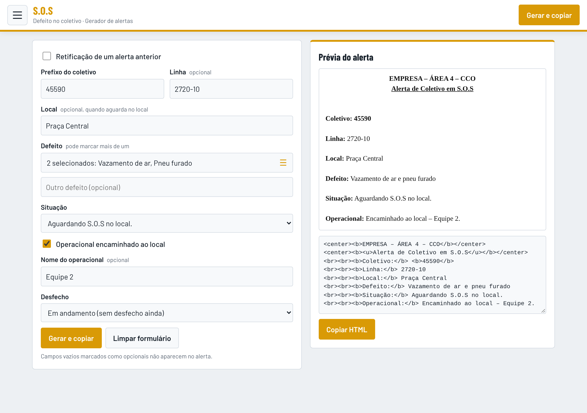
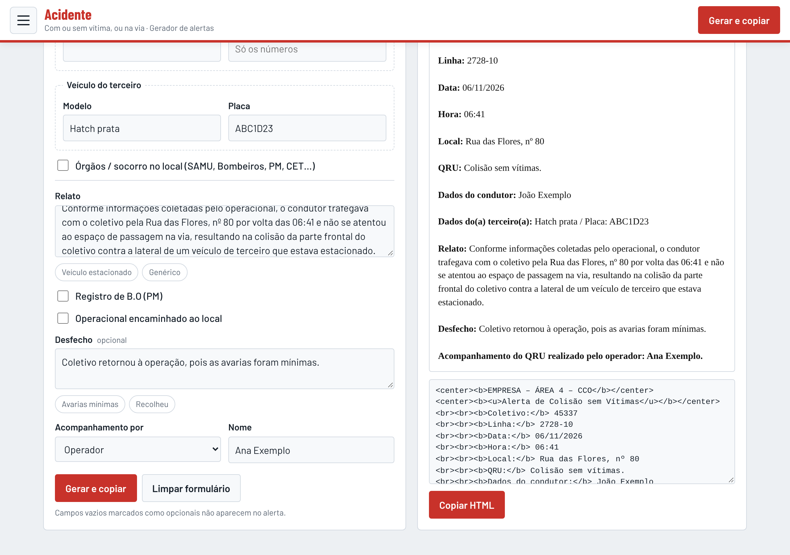
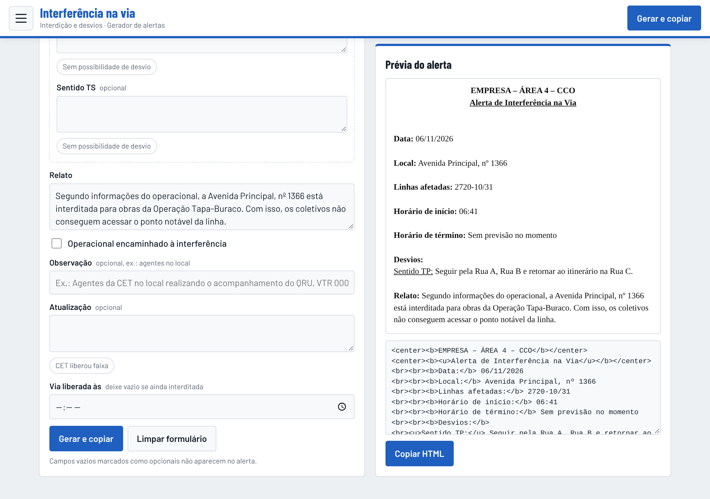
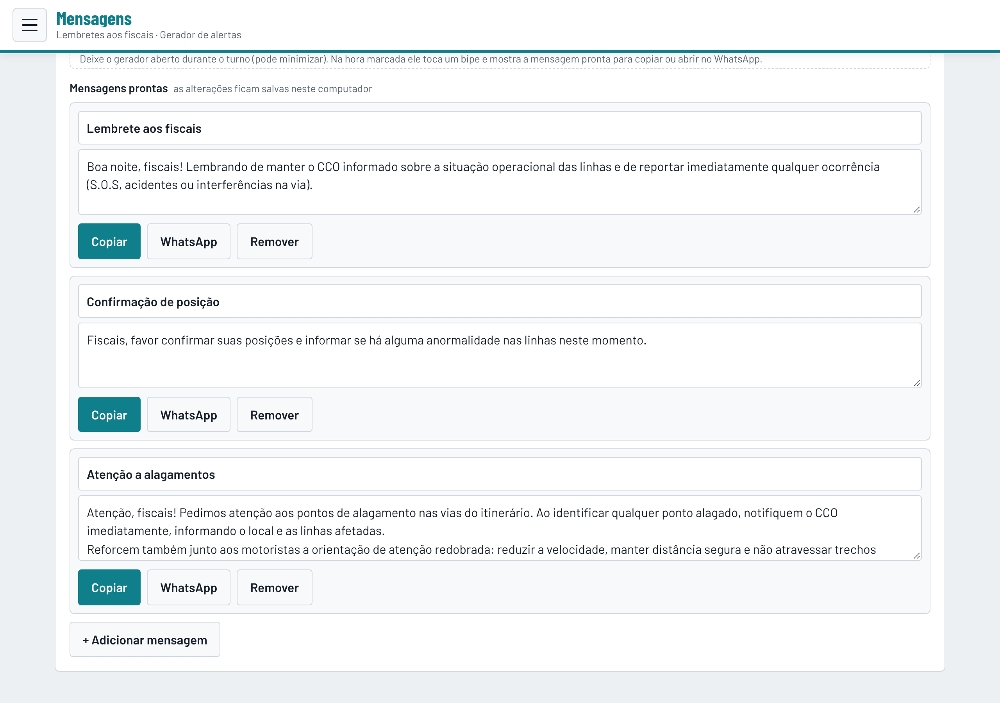
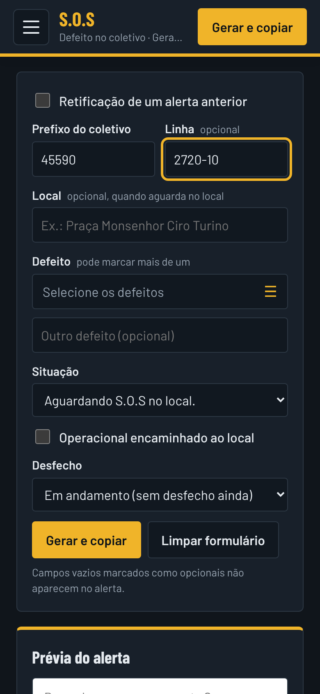

Uma ferramenta web que transforma o registro de ocorrências do Centro de Controle Operacional em poucos cliques: o operador preenche um formulário guiado e recebe o alerta já formatado, padronizado e copiado.

Cada alerta (quebra de coletivo, acidente, interdição de via) era escrito à mão, durante o turno e sob pressão. O texto mudava de operador para operador, faltavam campos importantes e era preciso reformatar a mesma informação para o e-mail, o sistema e o WhatsApp.
Um formulário por tipo de ocorrência, com textos prontos, máscaras e validações. O alerta sai no padrão da empresa, com cabeçalho, negritos e campos na ordem certa, e vai direto para a área de transferência. Campos opcionais vazios simplesmente não aparecem.
Defeitos com seleção múltipla, situação, operacional enviado, desfecho e retificação de alerta anterior.
Colisão, queda, mal súbito ou acidente entre terceiros. Órgãos no local, B.O e complemento de B.O.
Motivos com relato automático, desvios por sentido, responsável pela obra e horário de liberação.
E-mails das vans de atendimento especial, com assunto pronto para copiar.
Mensagens editáveis aos fiscais e lembretes programados no turno, com bipe e notificação.
Resumo para o WhatsApp que reaproveita os dados do último alerta e aceita colar o print.



